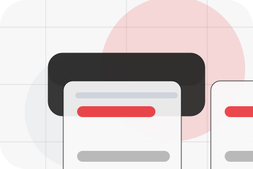
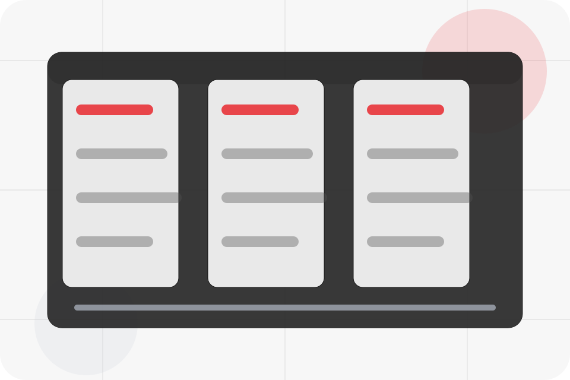
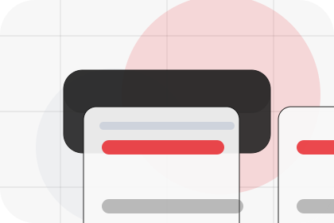
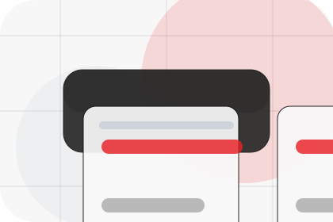
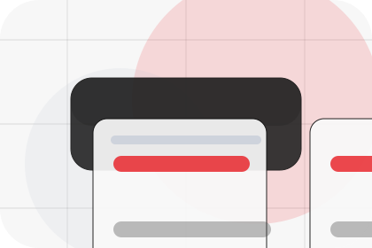
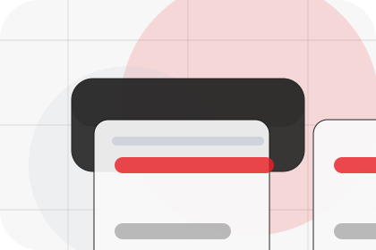
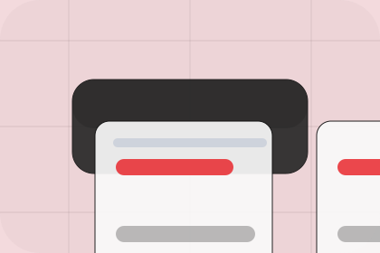

Question
Connection gives the page a specific angle instead of repeating the navigation label.
FAQ / 01
FAQ opens as a clear energy decision hub: what Vault offers, who it helps, why it matters, and which route to take first.
The first screen combines positioning, proof, primary action, and fast internal navigation, so people can act immediately or compare the rest of the faq route with context.
Centered product hero
Select the closest route and Vault keeps the next step, proof, and follow-up expectation aligned with cost reduction and resilience.

FAQ / 02
Connection handles buying doubts directly so visitors can understand timing, fit, limits, and the safest next step.
Answers are short by design: enough to remove hesitation, not so much that the page turns into documentation before the visitor can act.
Explore FAQ
Connection gives the page a specific angle instead of repeating the navigation label.

The product output cards show what to compare, what to avoid, and what matters most for energy, power & renewable solutions visitors.

The final cue points to a useful internal route so the section keeps the journey moving.
FAQ / 03
Warranty handles buying doubts directly so visitors can understand timing, fit, limits, and the safest next step.
Answers are short by design: enough to remove hesitation, not so much that the page turns into documentation before the visitor can act.
Explore FAQWarranty gives the page a specific angle instead of repeating the navigation label.
The product output cards show what to compare, what to avoid, and what matters most for energy, power & renewable solutions visitors.
The final cue points to a useful internal route so the section keeps the journey moving.
FAQ / 04
Output handles buying doubts directly so visitors can understand timing, fit, limits, and the safest next step.
Answers are short by design: enough to remove hesitation, not so much that the page turns into documentation before the visitor can act.
Explore FAQOutput gives the page a specific angle instead of repeating the navigation label.
The product output cards show what to compare, what to avoid, and what matters most for energy, power & renewable solutions visitors.
The final cue points to a useful internal route so the section keeps the journey moving.
FAQ / 05
Finance handles buying doubts directly so visitors can understand timing, fit, limits, and the safest next step.
Answers are short by design: enough to remove hesitation, not so much that the page turns into documentation before the visitor can act.
Explore FAQVault structures finance around question, answer, and a clear next route so visitors can compare the block quickly before they calculate savings.
Calculate SavingsFAQ / 06
Weather handles buying doubts directly so visitors can understand timing, fit, limits, and the safest next step.
Answers are short by design: enough to remove hesitation, not so much that the page turns into documentation before the visitor can act.
Explore FAQ

Weather gives the page a specific angle instead of repeating the navigation label.
FAQ / 08
Service explains the practical scope, best-fit situations, and expected outcome so energy visitors can compare options without decoding jargon.
The section keeps the offer concrete: what is included, who it is best for, what decision it supports, and which linked route gives the deeper detail.
Explore FAQWho should use service and when it belongs in the faq journey.
The practical benefit visitors should expect after choosing this route.
Where to compare details, pricing, support, or contact options before committing.
FAQ / 09
Support explains the practical scope, best-fit situations, and expected outcome so energy visitors can compare options without decoding jargon.
The section keeps the offer concrete: what is included, who it is best for, what decision it supports, and which linked route gives the deeper detail.
Open ContactWho should use support and when it belongs in the faq journey.
The practical benefit visitors should expect after choosing this route.
Where to compare details, pricing, support, or contact options before committing.
FAQ / 10
Vault closes the faq route with a clear action, a quick reminder of the value, and a low-friction way to calculate savings.
Visitors who are ready can use the primary action. Visitors who are still comparing can scan the section links, proof, and support routes before they calculate savings.
Calculate SavingsThe final block keeps the choice simple: act now, compare one more proof route, or send enough detail for a focused response.
Calculate Savingscost reduction and resilience
A renewable energy product site with minimalist hero, savings modules, battery/solar cards, and direct calculator. FAQ ends with a direct path to calculate savings, plus enough context for visitors who still need to compare.

Calculate SavingsInformation is provided for planning and should be reviewed for the final client, location, and operating rules.